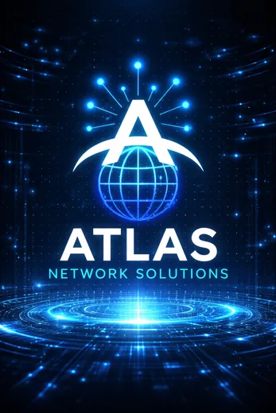

Clarity over complexity
Understand the options, costs and terms before you commit.
Atlas Network Solutions helps Pennsylvania homes and businesses make sense of internet, wireless and connected technology. We bring the options together, explain what matters and help you choose with confidence.
Choosing internet or business technology can mean sorting through competing plans, technical terms and offers that aren't easy to compare.
Atlas was built to make that process simpler. We listen first, review eligible options from our provider relationships and explain the trade-offs so you can make a decision that fits your needs and budget.
Our goal isn't to push a particular plan. It's to build the kind of relationship where you know who to call when your needs change.

We want every conversation to be useful, whether you're moving into a new home, opening a storefront or rethinking your company's connectivity.
Understand the options, costs and terms before you commit.
Recommendations should make sense for your address, usage and budget.
A real point of contact when you have questions or need your next solution.
Home internet, business connectivity or something in between. We'll help you explore your next step.